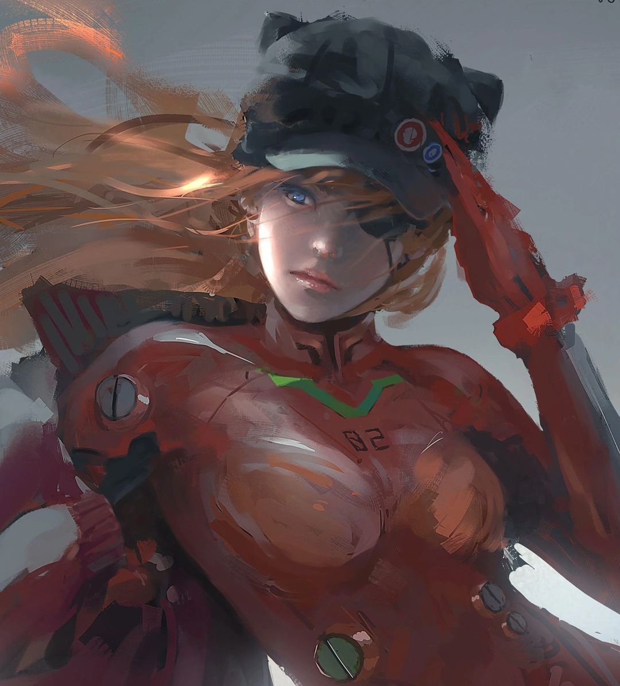

声明：
央视网（www.cctv.com）和中国网络电视台（www.cntv.cn）（以下统称“本网”）由央视国际网络有限公司主办。
本网是中央电视台的新媒体业务平台。经中央电视台授权，本网独占性通过信息网络向公众传播中央电视台享有著作权及相关权利的电视频道及其所包含的全部电视节目。
本网所呈现的所有内容，包括但不限于文字、图像、图片、照片、图表、音频、视频、标志、标识、广告、商标、商号、域名、程序、版面设计、专栏目录与名称、内容分类标准以及为注册用户提供的任何信息，均受到《中华人民共和国著作权法》、《中华人民共和国商标法》、《中华人民共和国专利法》、《中华人民共和国反不正当竞争法》等相关法律法规的保护，为本网或权利人所有。
任何第三方不得歪曲和篡改本网所呈现的内容。未经本网授权，任何第三方不得擅自引用、复制、转载、摘编或以其他任何方式非法使用本网站所呈现的内容。
任何第三方不得擅自转载本网提供的信息和服务内容，如需转载，必须取得相应权利人的合法授权。经本网授权使用的，不得超越所获授权范围，且在转载时须保留原有信息和服务内容的来源。
任何第三方不得盗用本网名义发布信息，或擅自使用本网名义引用、转载来源不规范或权属不明晰的信息。
凡本网注明“来源：央视网／中国网络电视台”的所有内容，均为本网合法拥有著作权或相关权利的内容，未经本网授权，任何第三方不得转载、链接、摘编或以其他方式使用上述内容。已经本网授权使用的，应在授权范围内使用，并注明“来源：央视网／中国网络电视台”。
凡本网未标有“来源：央视网／中国网络电视台”的内容，均为转载稿，转载目的在于传递更多信息，并不代表本网赞同其观点或对其真实性负责。任何第三方在以转载、链接、摘编或者下载等方式使用时，必须保留本网注明的“来源”，并自行承担相关法律责任。
对于违反上述规定侵犯本网站知识产权等合法权益的行为，本网将依法追究其法律责任。
鉴于本网呈现的内容来源广泛、数量较多，如著作权人发现本网转载了其拥有著作权的作品且没有事先与著作权人沟通联络，请主动与本网联系，提供相关证明材料，本网将依法处理。如权利人认为本网呈现的内容侵犯其肖像权、名誉权或其他合法权益的，请主动与本网联系，提供相关投诉材料，本网亦将依法处理。
